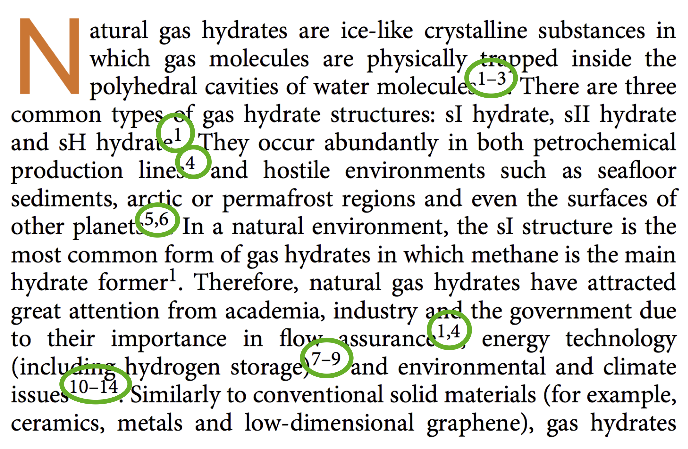
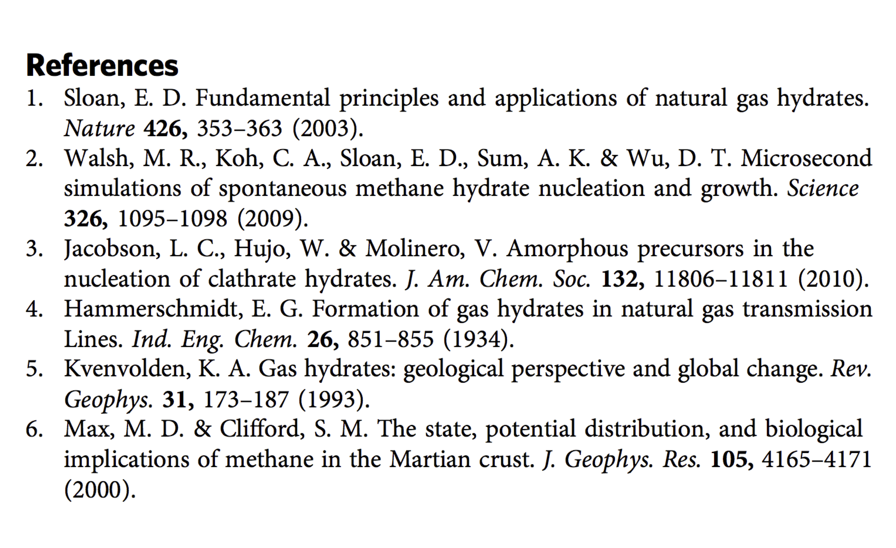
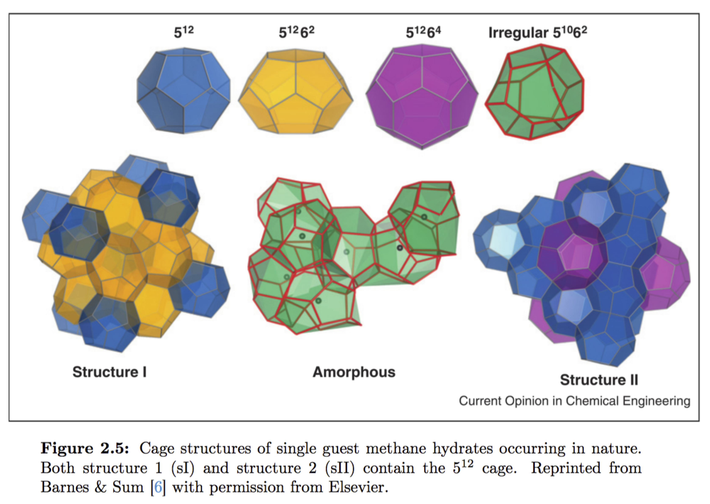

Exercise 2: Citations and references
Spend 15 minutes on this exercise working with your group
Even though we expect that you have learned about citatons and referencing before, we take some time to refresh it now.
Using citations and references correctly ensures that
- the reader knows where to read more about something
- the reader can check your facts and verify your results
- that you credit the right person for a discovery, claim, line of reasoning etc. rather than pretending you made it up yourself.
a) UiO has rules for cheating, and within them is a guide for using sources and citations. Open the link and make sure that you are familiar with these rules.
To be sure that we agree on the terminology, we have included two figures showing what are citations and what are references.
Figure 1: These are citations (inside green cirlcles.)

Figure 2: ... and these are the references. The references contain enough information to find the document that was cited.

b) In the examples below, we have taken small sections of text from real academic papers. We have highlighted one of the citations in each section of text. In the exercises below, discuss with your group the reason for having the citation, and then check the answer.
Standard force fields, designed to be numerically efficient, are created by fitting a subset of thermodynamic and structural properties to an analytic expression for the potential energy, typically consisting of sums of pairwise long-range terms [8]. In many systems, this approach has proved successful even if the accuracy of such force fields is at best around 1 kcal/mol. For example, Schames et al. [9] used molecular dynamics simulations to discover a hidden binding site in HIV integrase, a molecule that enables the integration of HIV’s genetic material into the host cell DNA. This discovery led to experimental confirmation [10] and subsequent development of raltegravir, a successful medicine that halts the progression of HIV into AIDS. Another success was the simultaneous discovery by simulation [11] and experiment [12] of the molecular basis of mutations in a gene responsible for Gaucher’s disease, a genetic disease causing the build-up of fatty substances in the organism.
 Wrong!
Wrong!
Statement made in cited paper.
 Correct!
Correct!
Scientific fact from a different paper.
Wrong!
Here we present our recent development of a class of force fields for materials modelling [14–20] that are transferable, physically motivated, and implemented in the general purpose molecular dynamics software QDO_MD. The technique treats many-body polarisation and many-body dispersion on the same footing by representing electronic distributions of individual atoms and molecular moieties using a single coarse grained particle.
Factual statement from a different paper.
Wrong!
Wrong!
This is a review paper where the authors are summing up their efforts over some time. Thus to avoid muddling up the paper with a lot of citations, they just state that the contents are taken from other papers. This would usually not be accepted in original research papers.
Why the citation?

Wrong!
Statement originally made in cited paper
Wrong!
To avoid copyright infringements
This may be true, but another alternative is also true.
To refer to the paper originally containing the figure.
This is the main reason for this citation. Depending on the publisher, it may also be required to cite in order to comply with the conditions for reuse.
Singular or nonrough surfaces, which correspond to cusps in the plot of the surface free energy as a function of orientation, advance and retreat via the lateral motion of steps that add or subtract atomic layers. If a singular surface has no steps or step sources, its motion is limited by two-dimensional nucleation. The so-called “growth resistance” that is derived from the two- dimensional nucleation barrier was a controversial topic in the first half of the twentieth century, as researchers attempted to under- stand how singular surfaces could advance at supersaturations 10–100 times smaller than those predicted by nucleation theory. This issue was settled by Frank, who convincingly argued that screw-dislocation/surface intersections provide the source of the steps necessary for a singular facet to advance or retreat under the low-supersaturation conditions that are observed in growth exper- iments. In this communication, a singular surface (or facet) without steps is termed an ideal singular surface. When the problem of two-dimensional nucleation on an ideal singular facet was revisited by Hirth, using a refined theory, the conclusions of the earlier investigations were substantiated.
Below is the text reproduced with the citations from the actual version of the paper.
Singular or nonrough surfaces, which correspond to cusps in the plot of the surface free energy as a function of orientation, advance and retreat via the lateral motion of steps that add or subtract atomic layers. If a singular surface has no steps or step sources, its motion is limited by two-dimensional nucleation [1,2]. The so-called “growth resistance” that is derived from the two- dimensional nucleation barrier was a controversial topic in the first half of the twentieth century, as researchers attempted to under- stand how singular surfaces could advance at supersaturations 10–100 times smaller than those predicted by nucleation theory [2]. This issue was settled by Frank [3], who convincingly argued that screw-dislocation/surface intersections provide the source of the steps necessary for a singular facet to advance or retreat under the low-supersaturation conditions that are observed in growth exper- iments. In this communication, a singular surface (or facet) without steps is termed an ideal singular surface. When the problem of two-dimensional nucleation on an ideal singular facet was revisited by Hirth [4], using a refined theory, the conclusions of the earlier investigations [2] were substantiated.
The reductionist hypothesis may still be a topic for contrtoversy among philosphers, but among the great majority of active scientists I think it is accepted without question. The workings of our minds and bodies, and of all the animate or inanimate matter of which we have any detailed knowledge, are assumed to be controlled by the same set of fundamental laws, which except under certain extreme conditions we feel we know pretty well.
It seems inevitable to go on uncritically to what appears at first sight to be an obvious corollary of reductionism: that if everything obeys the same fundamental laws, then the only scientists who are studying anything really fundamental are those who are working on those laws. In practice, that amounts to some astrophysicists, some elementary particle physicists, some logicians and other matematicians, and few others. This point of view, which it is the main purpose of this article to oppose, is expressed in a rather well-known passage by Weisskopf [1]:
...
Perhaps. Depending on the readership that is being addressed, this amount of citations may or may be sufficient.
Perhaps. Depending on the readership that is being addressed, this amount of citations may or may be sufficient.